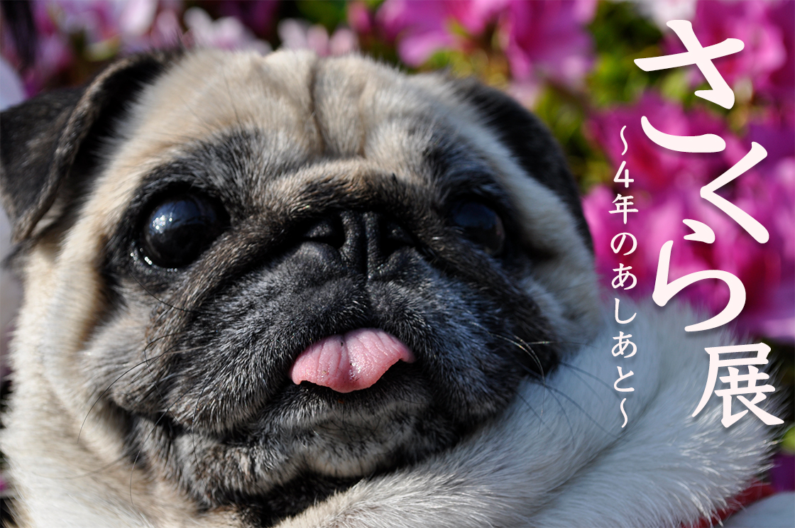
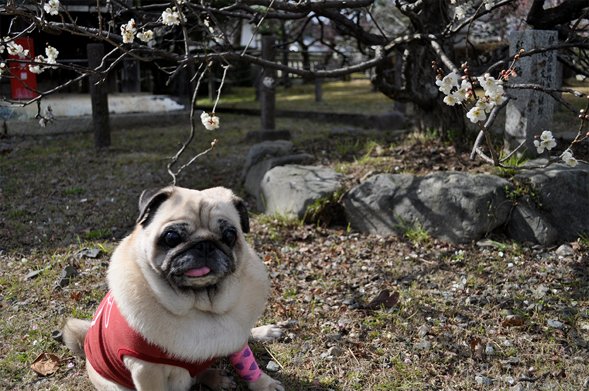
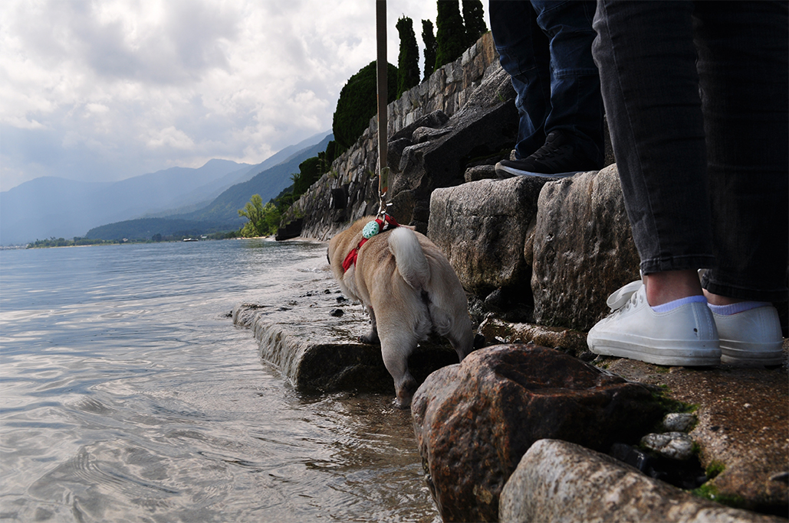
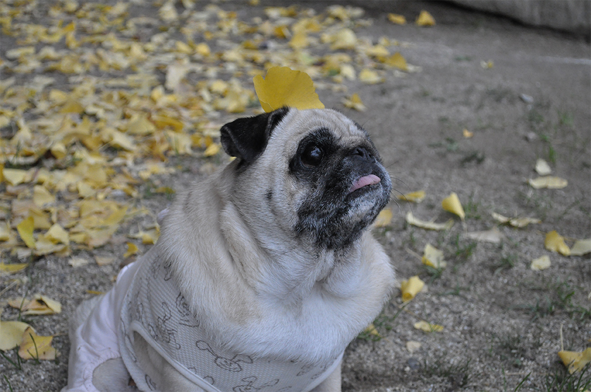
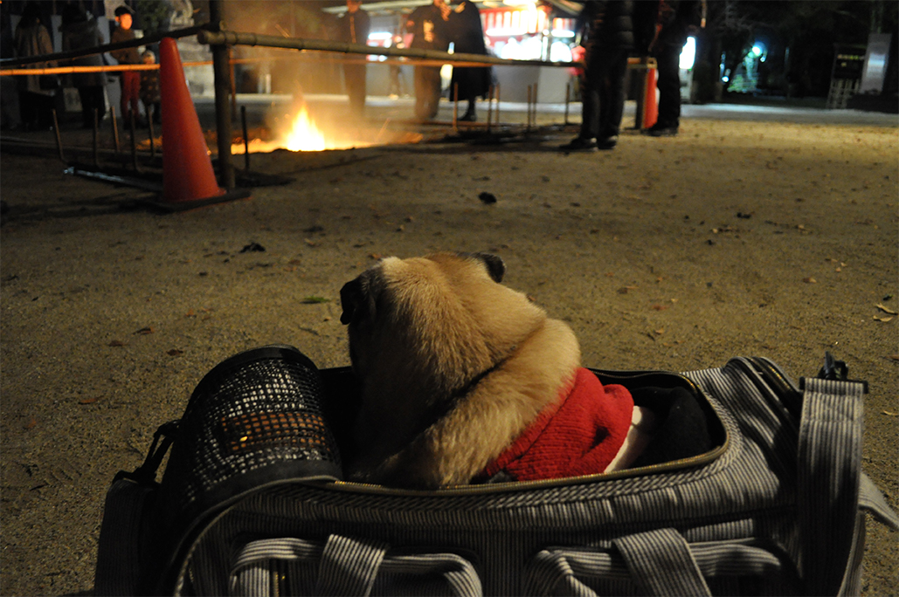

《春の日》鎌田陸花 Copyright©️2020Rikka Kamata All Rights Reserved.
開催概要
陽だまりのような暖かな日々の結晶たちー
今年、２０２０年８月２１日をもって、さくらが我が家にやってきて４年目に突入します。４周年を記念し、家族が撮りためた愛犬さくらの写真展を開催いたします。
本展は、さくらの緩やかな日々を撮影した写真を、四季事分けられた回廊の他、さくらをモチーフに描かれた絵画なども展示いたします。
ぜひ、陽だまりのような暖かい日々をお楽しみください。
開催期間
２０２０年 ６月２日（火）〜８月２１日（金）
休館日：月曜日（祝日の場合は開館）
午前１０：００〜午後１８：００まで
入場は閉館３０分前まで
最終日は午後１７：００まで
会場
京都市京セラ美術館（〒６０６−８３４４ 京都市左京区岡崎円勝寺町 １２４）
入場料
無料
展示内容
１、春の間
さくらと桜
様々な春の花と並んだ愛らしいさくらをレンズに収めた写真たちが並びます。春の陽気さを感じ取って頂くと幸いです。

《さくらと桜》
２、夏の間
夏の海！
かんかん照りの中、暑さを和らげる水とさくら。夏のカラッとした暑さと、水により涼しさを感じ取っていただけます。

《冒険です！》
３、秋の間
色付く秋
秋の色付いた草木を見ると、もう冬が来ることを実感させられます。短い秋を楽しむさくらの姿をご覧ください。

《大銀杏》
４、冬の間
寒い冬、モコモコで対策
寒さの厳しい冬。その厳しい冬を乗り越えるため様々な衣服に身を包んだモコモコなさくらをお楽しみください。

《初詣》